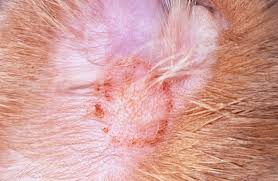
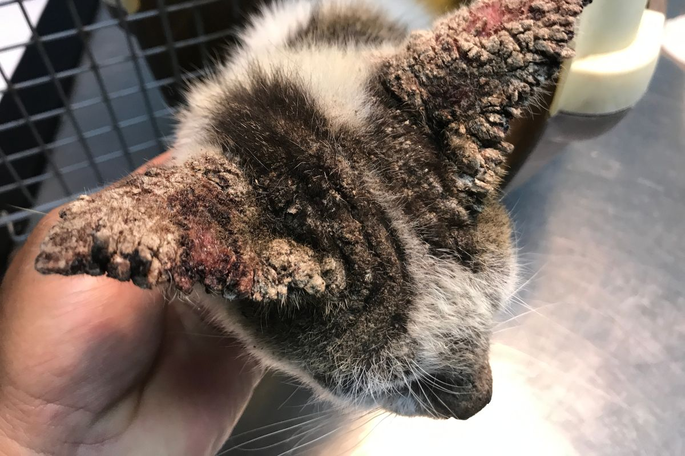
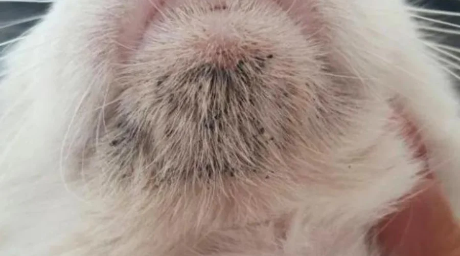

SkinCat
Deteksi penyakit kulit kucing dengan memilih ciri-ciri & gejala.
Pilih gejala yang terlihat pada kulit kucing Anda → sistem akan menganalisis kemungkinan penyakit (Flea Allergy, Ringworm, Scabies, Feline Acne).

4 Penyakit Kulit Utama pada Kucing
 Flea Allergic Dermatitis
Alergi kutu → gatal hebat, rambut rontok pangkal ekor, kemerahan, ada kotoran kutu.
Flea Allergic Dermatitis
Alergi kutu → gatal hebat, rambut rontok pangkal ekor, kemerahan, ada kotoran kutu.

Ringworm (Kurap) Infeksi jamur → lesi melingkar, rambut rontok berbentuk cincin, kulit bersisik.
Scabies (Kudis) Tungau → gatal ekstrem, keropeng tebal di telinga/wajah, penebalan kulit.
Feline Acne Komedo hitam di dagu, bengkak, pustula, kemerahan lokal.Cara Penggunaan (Pemilihan Ciri-Ciri)
- Amati kulit kucing Anda dengan pencahayaan cukup.
- Buka menu Deteksi Gejala dan centang semua ciri-ciri yang sesuai.
- Klik tombol "Deteksi Sekarang" → sistem akan mencocokkan dengan 4 penyakit.
- Baca hasil kemungkinan penyakit dan saran perawatan awal.
- Konsultasikan hasilnya ke dokter hewan untuk penanganan lebih lanjut.
Pastikan mengamati gejala dengan teliti (fokus pada kulit, rambut, perilaku gatal).